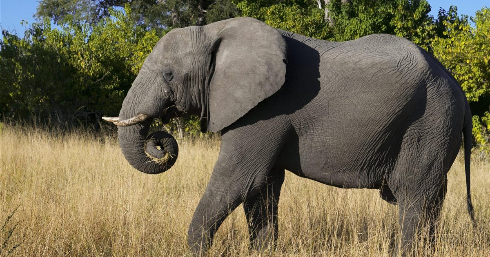

(Elephantidae)
Los elefantes o elefántidos (Elephantidae) son una familia de mamíferos placentarios del orden Proboscidea. Antiguamente se clasificaban, junto con otros mamíferos de piel gruesa, en el orden, ahora inválido, de los paquidermos (Pachydermata). Existen hoy en día tres especies y diversas subespecies. Entre los géneros extintos de esta familia destacan los mamuts.Los elefantes viven en manadas, pero solo las hembras permanecen en ella toda su vida. Generalmente es guiada por una matriarca y son un grupo muy unido. Por otra parte, los machos van de manada en manada y son solitarios una vez alcanzan la madurez.
1.Sus principales características son: su gran tamaño y su trompa, la cual articula al labio superior con su nariz, ésta posee más de 350 mil músculos, no posee huesos. 2.Los elefantes tienen la capacidad de adaptarse a cualquier tipo de hábitat. Generalmente se les observa en extensiones africanas, aunque también se les puede ver en sabanas, praderas, pantanos y cualquier otro sitio donde haya agua, ésta es necesaria para ellos, ya que no sólo pueden beberla, sino que les sirve para basarse y mantener así su piel fresca. 3.Estos grandes animales son herbívoros. Suelen alimentarse de cortezas suaves, también comen hojas de árboles y arbustos, frutas, hierbas frescas. Los elefantes necesitan ingerir alrededor de 200 y 250 kilos de comida para poder mantenerse, esto equivale a más de 14 horas al día alimentándose. Para completar su dieta, el elefante también necesita ingerir agua en mayor cantidad, cuando lo hace, ingiere más de 10 litros de una sola vez. 4.Un indicio de que el macho está listo para la reproducción es cuando comienza a agitar sus orejas fuertemente, lo hace con la intención de esparcir su aroma para atraer a las hembras. éstas suelen alcanzar la madurez sexual a los 14 aos de edad, mientras que los machos un poco más longevos son los que tiene más oportunidades para aparearse, ya que los más jóvenes no son capaces de enfrentárseles. 5.Estos animales suelen organizarse por grupos y cada uno de ellos cuenta con una matriarca, la hembra de mayor edad.